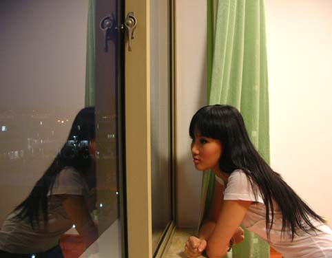
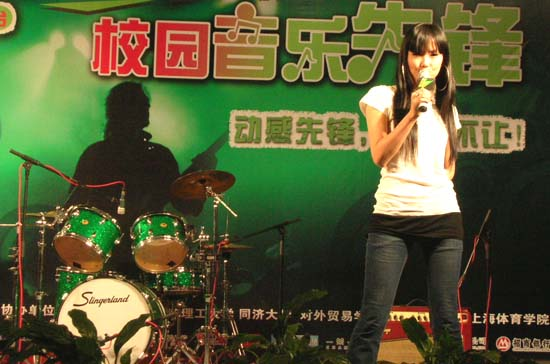

随着第四届校园音乐先锋的进行，我再次来到了松江大学城的外贸学院
这里的环境很棒，既适合同学们潜心学习，又适合梦想的孕育发芽，刚到的时候是傍晚，大片大片的绿色很舒心，稍作休息等待演出时天色已晚
这边风景独好

今天的校园音乐先锋有许多乐队参与，我听着乐队表演就十分High，也总是期望自己能组一个乐队演出呢！不过我想这样的机会以后也还会有的！
外贸学院的演出硬件设施都很棒

给大家介绍我的新单曲
我唱《High歌》的时候，远远看到一群女孩儿，虽然她们可能是第一次听到这首歌，但都从座位上站起来，和我一起挥舞手臂起舞，非常受鼓舞！
无论什么场合的演出，我都希望自己百分之百的投入能得到回应，哪怕只有一个人，也是件让人振奋的事！
在校园的演出，让我觉得最开心，最放松，同学们都很热情，非常配合，就像一个盛大的party！谢谢大家！！